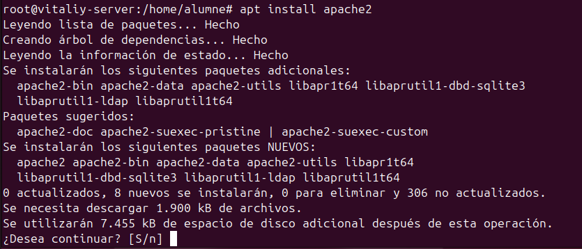
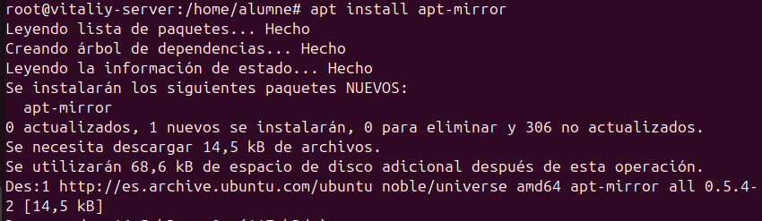
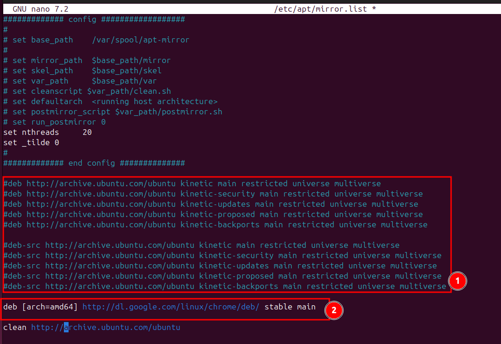
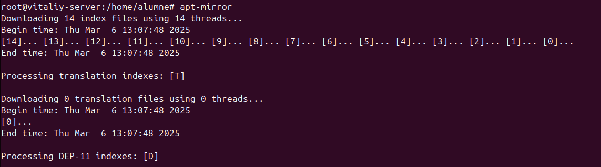
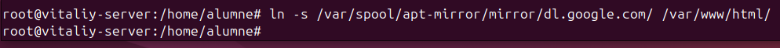
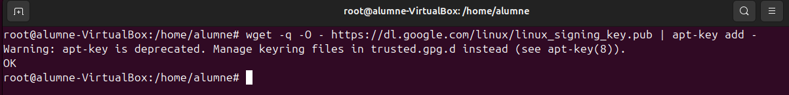
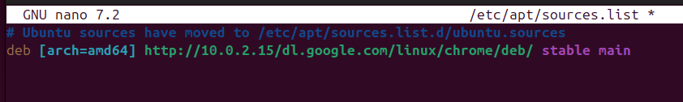
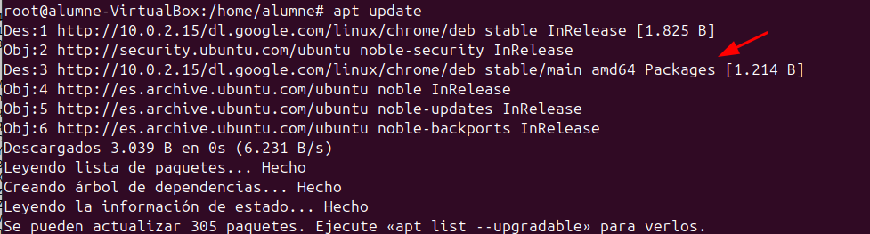
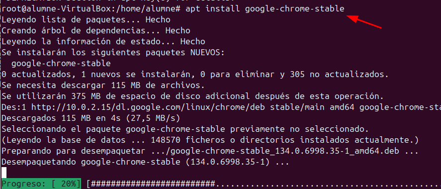

Servidor d'Actualitzacions
¿Què és un Servidor d'Actualitzacions?
El Servidor d'Actualitzacions és un servidor central que concentra tots els paquets d'actualització. Tots els clients es configuren per apuntar a aquest servidor per descarregar les actualitzacions, evitant així la necessitat d'accedir als repositoris web per defecte.
Funcionament
El sistema utilitza eines com apt-mirror i apache2 per baixar i servir localment els paquets d'actualitzacions. Quan els clients executen apt update, es connecten a la IP del servidor central per obtenir els paquets, assegurant una gestió centralitzada de les actualitzacions.
- Centralització dels paquets: El servidor manté una còpia local de tots els paquets necessaris.
- Actualització amb
apt update: Els clients descarreguen les actualitzacions des del servidor, evitant connexions directes als repositoris oficials.
Usos i Beneficis Pràctics
Aquest model de servidor és especialment útil en entorns on:
- Entorns corporatius: Es necessita un control estricte de les versions per garantir la compatibilitat i la seguretat en tots els dispositius.
- Xarxes amb restriccions d'accés a Internet: Permet que els clients actualitzin els seus sistemes sense exposar-los directament a Internet.
- Proves prèvies d'actualitzacions: Es poden validar i aprovar les actualitzacions en un entorn controlat abans de distribuir-les a tots els clients.
- Auditoria i control: El servidor central pot registrar els paquets descarregats i les actualitzacions, facilitant el seguiment i la resolució d'incidències.
Pros i Cons
| Pros | Cons |
|---|---|
| Centralització i control: Facilita la gestió de les actualitzacions i permet validar els paquets abans de la distribució. | Punt únic de fallada: Si el servidor central no està disponible, els clients no podran actualitzar-se. |
| Reducció del tràfic d'Internet: Només es descarrega una còpia local dels paquets, estalviant banda ampla. | Manteniment addicional: Cal dedicar recursos per mantenir, actualitzar i assegurar el servidor central. |
| Uniformitat de versions: Tots els clients reben els mateixos paquets, garantint coherència en el sistema. | Configuració inicial complexa: La implementació pot ser més complexa que l'ús directe dels repositoris en línia. |
Aspectes de Seguretat
- Filtrat de continguts: El servidor pot estar configurat per descarregar només paquets verificats, reduint el risc d'actualitzacions malicioses.
- Entorns tancats: En xarxes amb accés restringit, els clients no necessiten connexió directa a Internet, disminuint l'exposició a amenaces externes.
- Control d'accés: Es poden implementar mecanismes d'autenticació i registre per monitoritzar quins dispositius accedeixen als paquets, facilitant l'auditoria.
Configuració del Servidor
Primerament, s'executa sudo apt update al servidor per actualitzar la llista de paquets. A continuació, s'instal·la el servidor web Apache2 amb la comanda sudo apt install apache2.
sudo apt update && sudo apt install apache2

Instal·lem el paquet apt-mirror, una eina que permet descarregar una còpia local dels repositoris APT. Aquest paquet s'encarrega de descarregar i sincronitzar els paquets indicats en el fitxer de configuració, de manera que els clients es podran actualitzar des del servidor local en lloc d'accedir directament a Internet.

Editem el fitxer /etc/apt/mirror.list. En aquest fitxer, es comenten les línies que es troben dins de l'apartat (1) i s'afegeix la línia número (2) per definir el repositori o paquet que es vol mirrorar.**
sudo nano /etc/apt/mirror.list

Després, s'executa apt-mirror amb permisos d'administrador (utilitzant sudo) per baixar els paquets definits en el fitxer mirror.list. Aquest procés descarrega els paquets especificats.

Finalment, s'afegeix un enllaç simbòlic del paquet (per exemple, el paquet de Google) dins del directori /var/www/html, de manera que el contingut descarregat sigui accessible a través d'Apache2.

Amb aquests passos, la configuració del servidor queda completa. L'exemple utilitza Google com a referència, però es pot substituir pel repositori o paquet que es desitgi.
Configuració dels Clients
Primer de tot, s'executa sudo apt update per actualitzar la llista de paquets.
A continuació, s'executa la comanda
wget -q -O https://dl.google.com/linux/linux_signing_key.pub | apt-key add -
que descarrega la clau de signatura pública des de Google de manera silenciosa i la passa a apt-key per afegir-la al sistema. Això permet verificar l'autenticitat dels paquets que es descarregaran del repositori.
És possible que surti un warning, no pateixis.

Després, s'obre el fitxer de configuració de les fonts amb
nano /etc/apt/sources.list
i s'afegeix la ruta del nostre servidor, per exemple:
deb [arch=amd64] http://10.0.2.15/dl.google.com/linux/chrome/deb stable main

Un cop guardat el fitxer, s'executa un altre apt update i es pot observar que el paquet es descarrega directament des del servidor amb IP 10.0.2.15.

Finalment, s'instal·la el paquet amb
apt install google-chrome-stable
